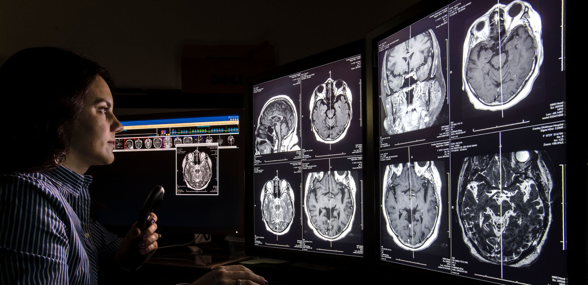

How to Become a Radiologist

table of Contents
If you are searching for information about Radiologists and the Medical specialty of Radiology, then you’ve come to the right place. As an ACCM accredited School of Medicine, we created this informational article as an introduction into the field of Radiology. It provides a step by step guide for future Medical students searching for answers on how to become a Radiologist.
We think it is very important that readers understand the level of commitment necessary to complete a Diagnostic Radiology residency, get licensed, and be able to work as a Radiologist in the US or Canada.
The level of education required to become a Radiologist is very high and takes over a decade to complete. Assuming that high school (or GED) has been completed here are the steps to becoming a Radiology specialist:
Step 1: Enroll in college and complete the pre-requisite courses needed for admission into Medical school.
Common pre-requisite courses that most medical schools require include: anatomy with a lab, biology, general chemistry with a lab, organic chemistry with a lab, physics with a lab, math, and writing courses. Medical college admissions specialists generally recommend receiving at least a B or higher as a course grade in order to be a competitive applicant to most medical schools. Also commonly completed prior to admission to Medical school is volunteering, shadowing of physicians, leadership, and research.Step 2: Prepare for and take the Medical College Admissions Test (MCAT).
Achieving a high MCAT is essential to be considered a competitive medical school applicant. The MCAT is an 8-hour, computer-based examination that tests over four different areas: Chemical and Physical Foundations of Biological Systems, Critical Analysis and Reasoning Skills (CARS), Biological and Biochemical Foundations of Living Systems, Psychological, Social and Biological Foundations of Behavior.Step 3: Get Accepted and Attend Medical School
The first half of Medical school is spent in the classroom learning the foundations of medicine. The second half of medical school is spent in the hospital learning the hands-on aspects of clinical medicine. During this time, medical students rotate through clerkships in:
- Internal Medicine
- Surgery
- Family Medicine
- Obstetrics and Gynecology
- Pediatrics
- Psychiatry
- Neurology
- and elective rotations such as Pathology, Endocrinology, Ophthalmology, and others chosen by the student.
Throughout medical school, students have to pass multiple board examinations, USMLE STEP for MD students, and COMLEX for DO students.
During the last year of Medical school, students apply and interview with different residencies in the field of their choosing. After interviews are completed, Medical students are matched into a residency training position via a computer algorithm system. Lastly, medical students graduate and get ready to start residency.
Step 4: Complete Internship and Residency
Graduate Medical students are now officially licensed Physicians but cannot practice on their own. The first year after graduation is spent in an Internship, also known as a Transitional/Preliminary Year. During this time new doctors will work in hospitals, clinics, or emergency rooms and will get general well-rounded medical training. It is also during this time that the final USMLE or COMLEX test must be completed. Intern years and residency are paid positions that vary according to the State and institution attended.
The next four years are dedicated to learning specifically about Radiology. Residents will spend time with patients, create plans for treatment, learn to interpret Medical imaging, ultrasound, and other radiologic tests. They are often required to be on call for nights and weekends.
Step 5: Board Certification
Although becoming board certified in Radiology is not a requirement for professional licensure, it is a valuable credential that conveys expertise in the field. That being said, almost all employers require board certification as a condition of employment.
To become board certified in Diagnostic Radiology, two examinations must be passed. The first one, The Core Exam, can be taken after 36 months in residency. The second board examination, The Certification Exam, can only be taken after successful completion of The Core Exam and is offered twelve months after Diagnostic Radiology residency is complete. For more information about Board Certification in all specialties and subspecialties of Radiology, please visit The American Board of Radiology.
Step 6: Complete Fellowship Training (Optional)
Radiologists have the option to pursue additional training in a subspecialty of Radiology. This is not necessary in order to find a job. Some Radiologists choose to not pursue a fellowship. Please read more about fellowship training and subspecialties in the next section,
What are the fellowship specialties Radiologists can pursue?
Upon successful completion of a residency program in Radiology, most Radiologists choose to pursue a fellowship in one of the subspecialties of Radiology. This allows Radiologists to receive more advanced training in specific specialized areas. Fellowships are completed by approximately ninety percent of Radiology residents, and many complete more than one fellowship. Here is a list of common fellowships available:
- Abdominal Radiology - One year
- Breast Radiology - One year
- Cardiothoracic Radiology - One year
- Endovascular Surgical Neuroradiology - Two years
- Musculoskeletal Radiology - One year
- Neuroradiology - One to two years
- Nuclear Radiology - One year
- Pain Medicine - One year
- Pediatric Radiology - One year
- Vascular And Interventional Radiology - One year
Frequently asked questions

What is a Radiologist?
A Radiologist is an MD or DO physician that specializes in the use of Medical imaging equipment and imaging techniques to help diagnose and treat injury and disease. Common procedures and techniques involve the use of Magnetic resonance imaging (MRI), Computed tomography (CT), X-rays, Positron emission tomography (PET), Ultrasonography, Fusion imaging and Nuclear medicine.
What does a Radiologist do?
The work environment for a Radiologist may vary from job to job and based on if they have completed a fellowship (discussed above). Most Radiologists work in a hospital, however others may work in a clinical or academic setting. The duties of a Radiologist include but are not limited to:
- Consulting with other medical professionals
- Performing imaging procedures and interpreting the results
- Diagnosing injuries and ailments
- Referring patients to other appropriate health care practitioners
These Medical images they perform are extremely complex and require extensive knowledge of human anatomy, pathology, and the intricacies of different imaging modalities. The majority of these methods use some type of radiation. Thus, Radiologists receive extensive training in protecting individuals from and minimizing the adverse effects of radiation. Some Radiologists
salaries of a radiologist

In the dynamic landscape of the healthcare industry, radiology plays a pivotal role in diagnosing and treating various medical conditions.
Radiologists, with their expertise in interpreting medical images, are indispensable members of the medical team. BLS states that 16.5K+ openings for radiologic and MRI technologists are projected each year, on average, throughout 2021 to 2031.
Aspiring medical professionals and those already in the field often wonder about radiologist salaries a crucial factor in career decisions. The current wage is equal to or greater than $115/hour or $239,200/year.
Let us delve into the intricacies of radiologist salaries, covering a wide range of topics to provide a comprehensive understanding of compensation trends and factors that influence
The salary of a radiologist can vary based on factors such as experience, subspecialty, geographic location, and practice setting. However, the average radiologist salary in the United States is $450,590 as of 2023, but the range typically falls between $391,790 and $521,190.